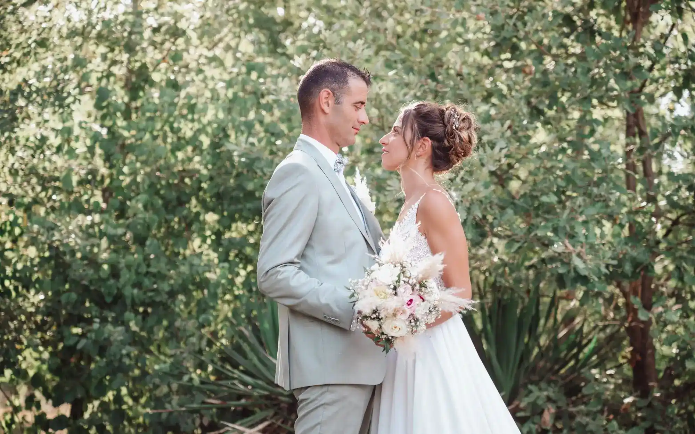

Photographe de mariage · Tarn · Occitanie
Histoires de mariage en images
Découvrez une sélection de reportages de mariage réalisés par Franck G. Photographie. Des préparatifs à la soirée, chaque image raconte une émotion, un détail et un instant unique.
Découvrir les reportagesLa galerie
Les reportages
Des souvenirs naturels, lumineux et authentiques. Choisissez une catégorie ou parcourez l’ensemble des photos.